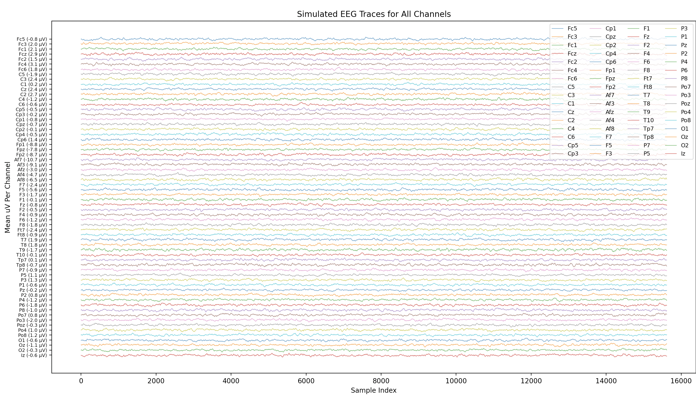

Generates realistic synthetic EEG traces for all 64 channels using per-channel amplitude statistics from a real subject, visualized as a stacked waterfall plot.
Simulated EEG with known properties is useful for validating that downstream scripts behave correctly independent of real data noise. If a pipeline step works on simulated EEG but fails on real data, the fault is almost certainly in the data rather than the code. The simulation here uses hardcoded per-channel statistics measured from a real subject in Script 16, so the generated traces occupy the correct amplitude ranges for each electrode location.
# Momentum-based random walk constrained to measured [lo, hi] bounds
def make_series(mu, lo, hi):
series = [mu]
prev_dt = 0.0
for _ in range(n_points - 1):
d_rand = random.gauss(typ_step, step_std)
if random.random() < 0.5: d_rand = -d_rand
pull = (mu - series[-1]) * pull_strength
dt = momentum * prev_dt + (1 - momentum) * (d_rand + pull)
nxt = max(lo, min(hi, series[-1] + dt))
series.append(nxt)
prev_dt = dt
return series
# Normalize each channel to [0,4] then stack with constant offset
for i, name in enumerate(channel_order):
norm_data = [(x - data_min) / (data_max - data_min) for x in channels[name]]
offset_data = [x * 4 + (num_channels - 1 - i) * offset_step for x in norm_data]
plt.plot(offset_data, alpha=0.7, linewidth=0.8)The generator uses a momentum-based random walk with a mean-reverting pull term. The momentum parameter (0.8) produces correlated steps that look like slow EEG drifts; the pull term prevents any channel from wandering too far from its measured mean. The amplitude bounds come directly from the Script 16 output, so frontal channels like Fp1 (measured range −518 to +597 µV) correctly have wider excursions than motor channels like T10 (−78 to +141 µV).
The stacked waterfall display normalizes each channel independently before plotting, then adds a fixed offset per channel. The y-axis tick labels include the real measured mean in µV, grounding the synthetic visualization in the actual data.
Using measured per-channel bounds rather than a uniform range is the key detail that makes this simulation useful. A simulation with identical statistics for all 64 channels would produce visually plausible output but would be useless for catching amplitude-dependent bugs.
